Most people go to Tenerife for sun and sangria and two weeks of doing very little. Which is fine — the sun is real, the sangria is abundant, and doing very little on a volcanic island in the Atlantic has genuine merit. But if you stay longer, or if you're the kind of person who walks past a paragliding school and immediately asks what it costs, Tenerife turns into something else entirely.
I was there for two weeks. I did zero sangria. I did quite a lot of everything else.
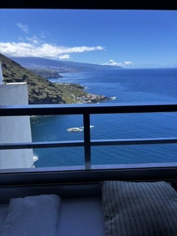
The view from home base. This is what working remote is supposed to look like.
The base
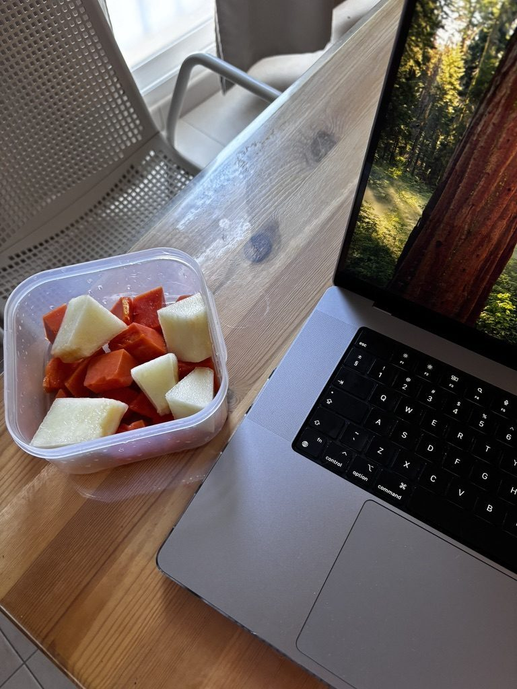
Best treats. Love working remote. Not sorry about it.
I rented a small place with a sea view and cooked whenever I had the option, which is both cheaper and better than eating out every meal. This is one of those remote work things that sounds boring until you've lived it — having a kitchen means you eat real food, you save money, and you spend your evenings doing something other than figuring out where to have dinner. The view was the bonus that made the whole arrangement feel slightly ridiculous in the best way.
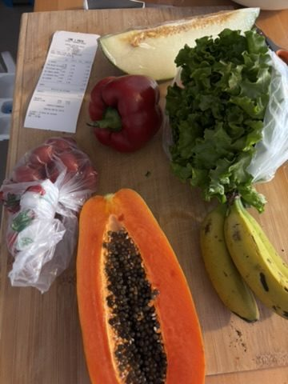
Cooking when you travel is a small act of staying sane. Also cheaper.
In the water
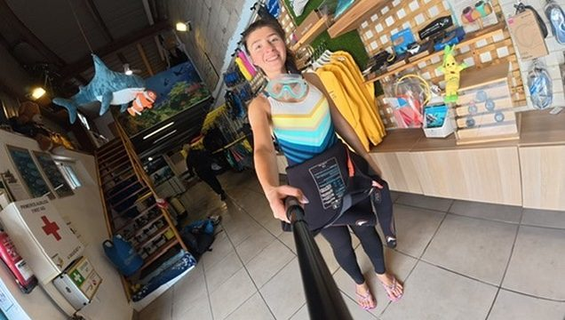
Snorkel gear on. This is the look of someone who has absolutely no idea what she's about to find.
The water around Tenerife is warm, clear, and surprisingly full of life once you get off the main tourist beaches. I snorkelled, I dived, and at one point I spent a meaningful amount of time attempting to locate a crab at depth. I found one. We regarded each other. Neither of us moved first. I'd call it a draw.
Looking for crabs. The crab found me first.
The kayaking was a different kind of excellent. The Tenerife coast from sea level, with cliffs going straight up and black rock beaches you can only reach by water, is a version of the island nobody on the main promenade is seeing. I went out twice. The second time, with a group of strangers who quickly became the kind of people you're genuinely sad to leave at the end of the day.
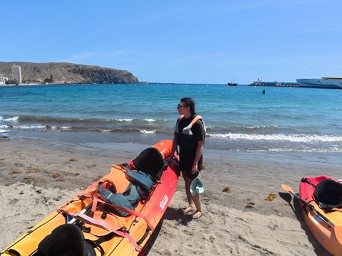
The Tenerife coast from a kayak. The cliffs from this angle make you feel appropriately small.
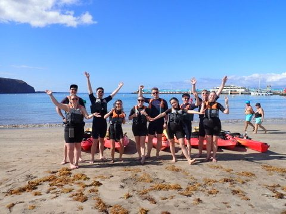
Happy people. The kayak does that to you reliably.
Chasing dolphins
My French travel buddy appeared, as travel buddies do, because we were both at the same place at the same time and both wanted to do the same thing. We went on a dolphin-watching boat trip together. The dolphins showed up immediately and completely on their own schedule, surfing the bow wave, leaping for no reason except that leaping appeared to be enjoyable. We watched them for an hour. I have yet to meet anyone who watched dolphins and didn't come back in a better mood.
Born under a lucky star

Paragliding in Tenerife. The ground is very far down. This is correct.
I walked past a paragliding school and immediately asked what it costs. This is exactly the kind of decision I make. The answer was within budget, the sky was clear, the instructor had the calm energy of someone who has launched off this cliff approximately eight thousand times. I strapped in.
Paragliding above the Tenerife coast is one of those experiences that doesn't translate into description very well. You're in the air. The island is below you. The Atlantic goes out in every direction. The town you drove through this morning is the size of a postage stamp. There is no noise except the wind and your own breathing. I was up there for twenty minutes and it felt like five, which is the sign of something done right.
The landing is less elegant than the flight. I am not going to tell you how I landed.
The kite surfers
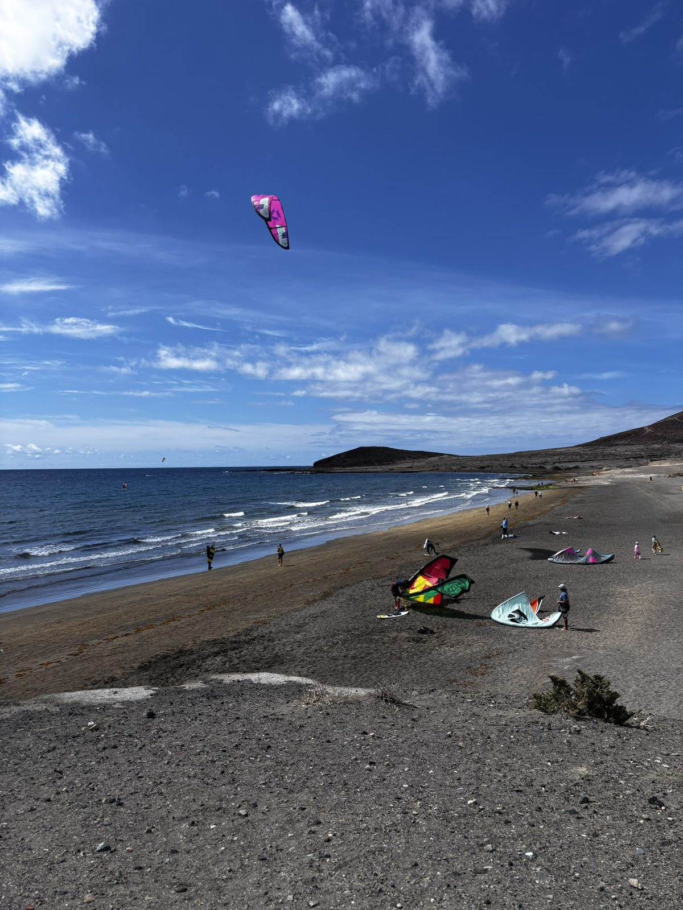
Kite surfers. I watched them for forty minutes. People are great.
There's a beach in the south of Tenerife where the wind is consistent and the kite surfers arrive every afternoon without fail. I sat and watched them for the better part of an hour. There is something genuinely therapeutic about watching people who are very good at something difficult do it with total ease — the way the kite pulls, the rider cutting across the water, the jump and the turn and the landing. I have added kite surfing to the list. The list is getting long.
The mysterious bike chain
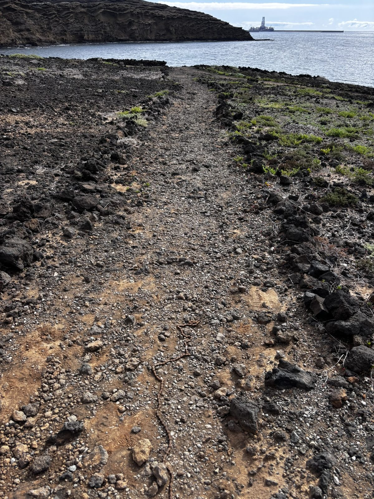
A bike chain. On a trail to the beach. No bike anywhere near it. What happened here?
I found a bicycle chain on a trail to the beach. No bicycle. No rider. Just the chain, lying in the dust, about a kilometre from the sea. There are several possible explanations and I have thought about all of them. The most likely: someone's chain snapped, they walked the bike back to wherever they came from, and the chain stayed behind. The most interesting: something else entirely. I left it there. The beach was good.
The drives
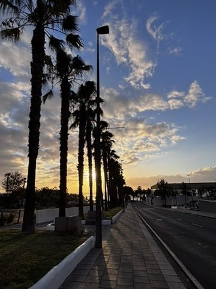
Tenerife from the road. The interior of this island is its own country.
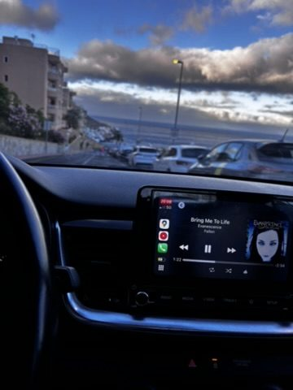
Music on. Window down. The only way to drive an island.
Tenerife rewards driving. The north and the south of the island are genuinely different climates — the north is green and occasionally foggy, the south is dry and lunar and gets all the sun. The interior, going up toward El Teide, changes again into something almost alpine. I drove all of it on different days, always with music, always with no fixed plan past "that road looks interesting."
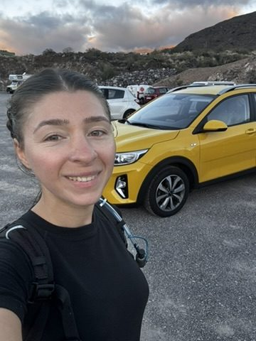
The north of the island on a quiet Tuesday. This road was mine for twenty minutes straight.
The quote in the sand
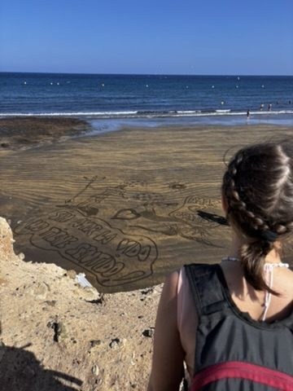
Sin amor la vida no tiene sentido. Without love, life has no meaning. Someone wrote this. The sea will take it. It was true while it was there.
Someone had written in the sand, in large letters: sin amor la vida no tiene sentido. Without love, life has no meaning. I don't know who wrote it or when or what state they were in when they did. Sand writing has a short life — one tide and it's gone. But it was there when I walked past, and I stood in front of it for longer than I expected to.
Travel does this sometimes. You're just walking on a beach and then you're standing in front of something that makes you very quietly take stock of things.
The life-changing quote (and other things found)
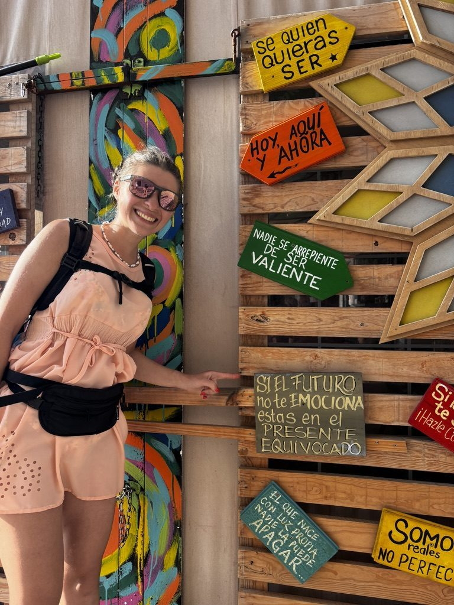
Found a life-changing quote. Or more. Tenerife is full of them if you look.
It was that kind of trip. The kind where things find you more than you find them — a quote on a wall, a conversation with a stranger, a kite surfer doing something technically impossible with complete calm, a dolphin leaping for no reason. You don't plan for any of it. You just have to be somewhere long enough for it to happen.
The full moon
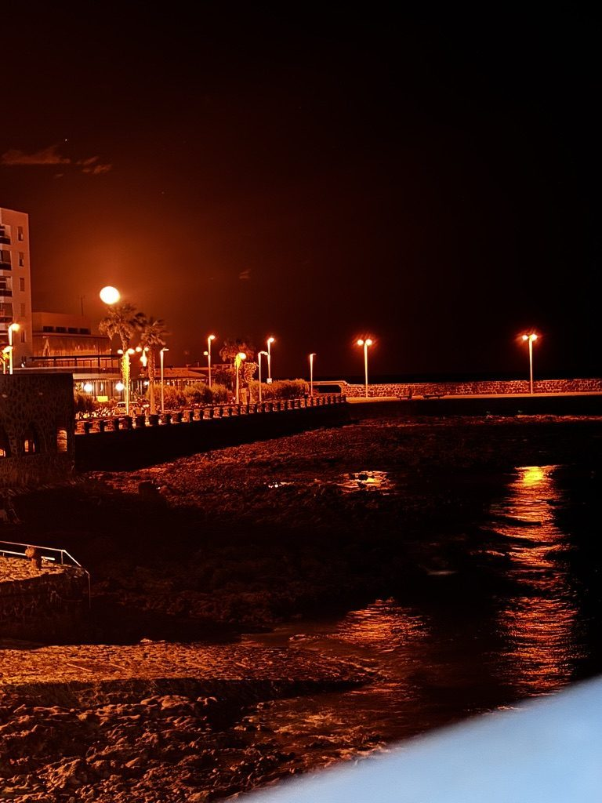
Full moon, Tenerife coast. Witness to all of it.
On one of the last nights I sat outside late and watched the full moon come up over the water. It was the kind of moon that makes the sea look like metal and everything else look like a film set. I'd had a full two weeks by then — paragliding, dolphins, crabs, kayaking, driving, cooking, working, swimming, watching, finding things. The moon came up and I felt like it had seen the whole thing.
Paradise, found

Found it. Right here.
The word "paradise" is overused. Every brochure has it. Every Instagram caption that runs out of ideas reaches for it. But there are moments when the word is the right one and you don't feel embarrassed using it — when the light is that specific, the water is that colour, you've been moving long enough to have earned it, and nowhere else in the world is asking anything of you.
Tenerife gave me several of those moments. It also gave me a mysterious bike chain, a French friend, a crab standoff underwater, and Spanish words in the sand that have stayed with me since.
If you're going there and planning to stay on the sun-bed: stay on the sun-bed. The sun is genuinely excellent. But if you're the type to walk past a paragliding school — you already know what to do.